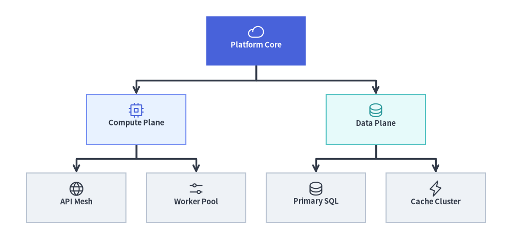
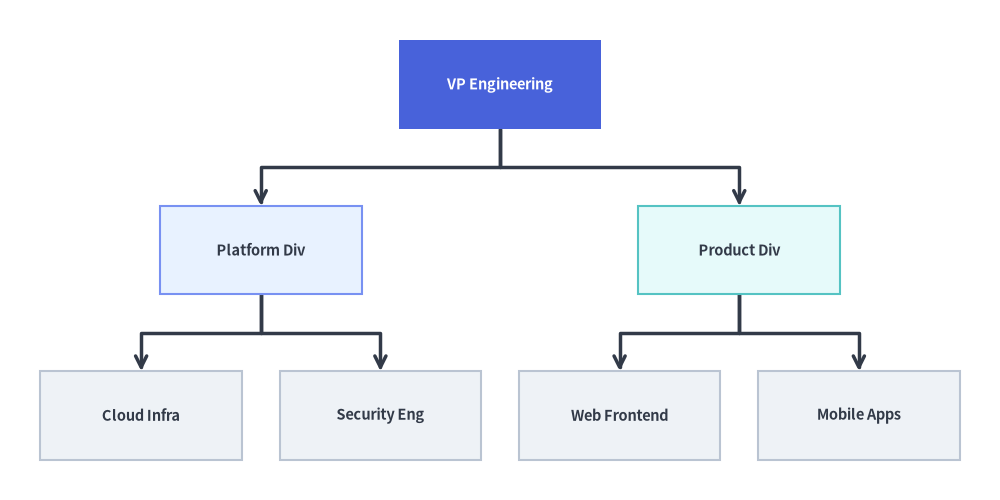
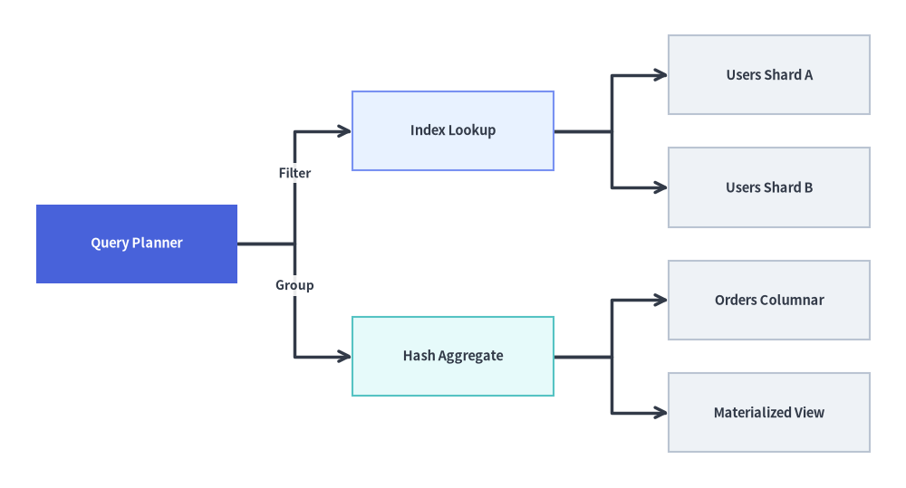
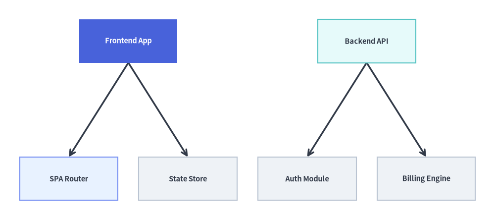

TreeGraph: Balanced Hierarchies & Decomposition Trees
TreeGraph implements the Reingold-Tilford / Buchheim compact tree layout algorithm, arranging strict parent-child hierarchies so that every parent node is symmetrically centered over (or beside) its children while sibling subtrees are packed tightly without ever colliding.
Use TreeGraph whenever your topology is a strict tree (every node has at most one parent), such as organization charts, Abstract Syntax Trees (ASTs), call hierarchies, taxonomy breakdowns, or fault trees.

Source Code
from drawlib.canvas import save, setup
from drawlib.graph import TreeGraph
from drawlib.icons import phosphor
from drawlib.styles import Styles
setup(width=124, height=58)
g = TreeGraph(
root="core",
direction="TB",
level_sep=7.0,
sibling_sep=5.0,
edge_routing="orthogonal",
default_node_width=24.0,
default_node_height=12.0,
default_node_text_style=Styles.DarkBold.patch(text_size=10.5),
)
# Level 0: Root Node
g.node(
"core",
"\nPlatform Core",
style=Styles.PrimaryFlat,
text_style=Styles.WhiteBold.patch(text_size=10.5),
)
# Level 1: Division Branches
g.child("core", "compute", "\nCompute Plane", style=Styles.PrimaryNeutral)
g.child("core", "data", "\nData Plane", style=Styles.SecondaryNeutral)
# Level 2: Leaf Subsystems (50%+ Neutral baseline)
g.child("compute", "api", "\nAPI Mesh", style=Styles.Neutral)
g.child("compute", "workers", "\nWorker Pool", style=Styles.Neutral)
g.child("data", "sql", "\nPrimary SQL", style=Styles.Neutral)
g.child("data", "cache", "\nCache Cluster", style=Styles.Neutral)
layout = g.draw(margin=4.5)
for nid, icon_fn, st in [
("core", phosphor.cloud, Styles.White),
("compute", phosphor.cpu, Styles.Primary),
("data", phosphor.database, Styles.Secondary),
("api", phosphor.globe, Styles.Dark),
("workers", phosphor.sliders_horizontal, Styles.Dark),
("sql", phosphor.database, Styles.Dark),
("cache", phosphor.lightning, Styles.Dark),
]:
n = layout.nodes[nid]
icon_fn((n.x, n.y + 2.2), width=4.0, style=st)
save()
1. Constructor & .child() Builder API
from drawlib.graph import TreeGraph
from drawlib.styles import Styles
g = TreeGraph(
root="vp", # Explicit root node ID (auto-detected if None)
direction="TB", # "TB" (Top-to-Bottom) or "LR" (Left-to-Right)
level_sep=12.0, # Fixed gap between tree depths (auto-scales if None)
sibling_sep=6.0, # Minimum gap between sibling nodes (auto-scales if None)
edge_routing="orthogonal", # "orthogonal" or "straight"
default_node_style=Styles.Neutral,
default_edge_style=Styles.DarkBold,
default_node_width=24.0,
default_node_height=11.0,
)
Parameter Reference
| Parameter | Type | Default | Description |
|---|---|---|---|
root |
str | None |
None |
Explicit root node ID. If None, automatically detects all nodes with in-degree 0 and lays out multi-root forests side-by-side. |
direction |
Literal["TB", "LR"] |
"TB" |
Tree growth orientation ("TB" top-to-bottom or "LR" left-to-right). |
level_sep |
float | None |
None |
Fixed distance between successive tree depths. Auto-scales to canvas if None. |
sibling_sep |
float | None |
None |
Fixed minimum separation between adjacent siblings. Auto-scales to canvas if None. |
edge_routing |
Literal["orthogonal", "straight"] |
"orthogonal" |
Edge path routing ("orthogonal" right-angled tree branches or "straight"). |
default_node_style |
Style | None |
None |
Default style for nodes without an explicit style (defaults to Styles.PrimaryFlat). |
default_node_text_style |
Style | None |
None |
Default typography style for node labels. |
default_edge_style |
Style | None |
None |
Default line style for tree branches (defaults to Styles.DarkBold). |
default_edge_text_style |
Style | None |
None |
Default text style for branch labels. |
default_node_width |
float |
22.0 |
Default node width in canvas units. |
default_node_height |
float |
12.0 |
Default node height in canvas units. |
Concise Tree Construction with g.child(...)
In addition to g.node() and g.edge(), TreeGraph provides a single-call .child() helper that registers a child node and connects it from parent in one step:
g.child(
parent: str,
child_id: str,
label: str | None = None,
*,
style: Style | None = None,
text_style: Style | None = None,
shape: Literal["rectangle", "circle"] = "rectangle",
width: float | None = None,
height: float | None = None,
edge_label: str | None = None,
edge_style: Style | None = None,
arrow_head: Literal["->", "<-", "<->", "-"] = "->",
show: bool = True,
edge_show: bool = True,
) -> Node
Note:
- Multi-Root Forests (
root=None): Whenroot=Noneand multiple nodes have in-degree0(no incoming edges),TreeGraphautomatically creates a virtual super-root during layout calculation and arranges the independent trees side-by-side as a balanced forest.- Strict Tree Validation:
TreeGraphvalidates that the graph is a strict acyclic tree (at most one parent per node). If a node has multiple parents (a diamond DAG), useLayerGraphorArchitectureGraphinstead.
2. Top-Down (TB) Engineering Organization Hierarchy
A top-down (direction="TB") tree is ideal for organizational structures, class taxonomies, and ASTs. Notice how the Buchheim contour solver centers VP Engineering over the two division heads and evenly spaces the four leaf teams:
from drawlib.canvas import save, setup
from drawlib.graph import TreeGraph
from drawlib.styles import Styles
setup(width=124, height=62)
g = TreeGraph(
root="vp",
direction="TB",
default_node_width=25.0,
default_node_height=11.0,
default_node_text_style=Styles.DarkBold.patch(text_size=10.5),
)
# Root focal node in PrimaryFlat
g.node("vp", "VP Engineering", style=Styles.PrimaryFlat, text_style=Styles.WhiteBold.patch(text_size=10.5))
# Second level in Tinted-Neutral cards
g.child("vp", "plat", "Platform Div", style=Styles.PrimaryNeutral)
g.child("vp", "prod", "Product Div", style=Styles.SecondaryNeutral)
# Leaf teams in calm Neutral cards (50%+ neutral baseline)
g.child("plat", "infra", "Cloud Infra", style=Styles.Neutral)
g.child("plat", "sec", "Security Eng", style=Styles.Neutral)
g.child("prod", "web", "Web Frontend", style=Styles.Neutral)
g.child("prod", "mob", "Mobile Apps", style=Styles.Neutral)
g.draw(margin=5.0)
save()

3. Left-to-Right (LR) Service Decomposition & Call Tree
Switching to direction="LR" grows the hierarchy horizontally from left to right. This layout works exceptionally well for API request fan-out trees, work breakdown structures (WBS), and file/module trees where labels are wider than they are tall:
from drawlib.canvas import save, setup
from drawlib.graph import TreeGraph
from drawlib.styles import Styles
setup(width=126, height=68)
g = TreeGraph(
root="query_plan",
direction="LR",
default_node_width=28.0,
default_node_height=11.0,
default_node_text_style=Styles.DarkBold.patch(text_size=10.5),
)
# Root query coordinator
g.node("query_plan", "Query Planner", style=Styles.PrimaryFlat, text_style=Styles.WhiteBold.patch(text_size=10.5))
# Intermediate execution branches
g.child("query_plan", "index_scan", "Index Lookup", edge_label="Filter", style=Styles.PrimaryNeutral)
g.child("query_plan", "agg_stage", "Hash Aggregate", edge_label="Group", style=Styles.SecondaryNeutral)
# Leaf storage shards
g.child("index_scan", "shard_1", "Users Shard A", style=Styles.Neutral)
g.child("index_scan", "shard_2", "Users Shard B", style=Styles.Neutral)
g.child("agg_stage", "col_store", "Orders Columnar", style=Styles.Neutral)
g.child("agg_stage", "cache_hit", "Materialized View", style=Styles.Neutral)
g.draw(margin=5.0)
save()

4. Automatic Multi-Root Forest (root=None) & Straight Edge Routing
When root=None, TreeGraph automatically identifies all nodes with in-degree 0 and arranges multiple independent trees side-by-side as a balanced forest. Passing edge_routing="straight" connects parents to children with direct Euclidean line segments:
from drawlib.canvas import save, setup
from drawlib.graph import TreeGraph
from drawlib.styles import Styles
setup(width=126, height=56)
g = TreeGraph(
direction="TB",
root=None,
edge_routing="straight",
default_node_width=25.0,
default_node_height=11.0,
default_node_text_style=Styles.DarkBold.patch(text_size=10.5),
)
# Tree 1: Frontend App Hierarchy (Root 1)
g.node("fe_app", "Frontend App", style=Styles.PrimaryFlat, text_style=Styles.WhiteBold.patch(text_size=10.5))
g.child("fe_app", "fe_router", "SPA Router", style=Styles.PrimaryNeutral)
g.child("fe_app", "fe_store", "State Store", style=Styles.Neutral)
# Tree 2: Backend API Hierarchy (Root 2)
g.node("be_api", "Backend API", style=Styles.SecondaryNeutral)
g.child("be_api", "be_auth", "Auth Module", style=Styles.Neutral)
g.child("be_api", "be_billing", "Billing Engine", style=Styles.Neutral)
g.draw(margin=5.0)
save()

5. Best Practices
- Choose
TreeGraphvs.SmartArts.TreeNode:- Use
TreeGraph(drawlib.graph) when you want node-and-edge graph semantics, edge labels (edge_label="..."), cluster overlays, or post-layout coordinate access (g.calc()). - Use
TreeNode(drawlib.smartarts) when you want a compact file-explorer / indented directory tree list.
- Use
- Use
direction="LR"for Wide Trees: When a tree has many leaf nodes (6+leaves),direction="LR"stacks leaves vertically so labels never crowd horizontally.